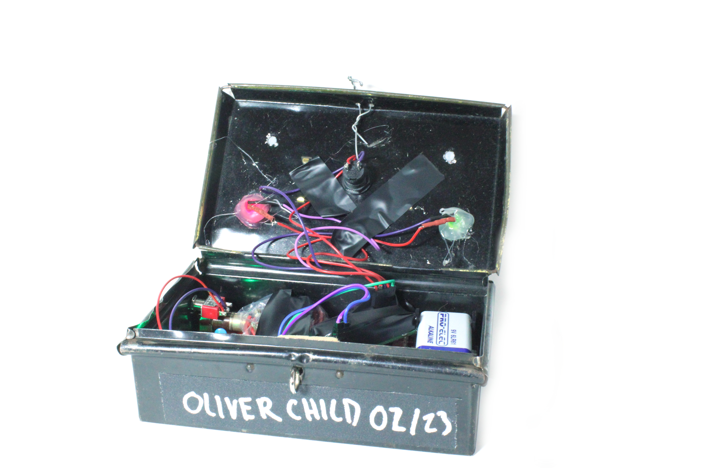

The DEDETERMINATOR
The DEDETERMINATOR is a quatum decision making tool, harnessing truly random process to break the user free from the causal chain of existence.

This piece combines an Americium 241 alpha-particle source from a smoke alarm with a radiation detector that uses a soviet-era Geiger-Muller tube. The decision outcome is based on the timing between detections of alpha particles from the decay of the radioactive nuclei.
The audience is invited to direct questions based on an impactful life decision towards the device and take an action based on its response; only then can one feel the liberation from their causally determined existence. Audience members may also open or lift the device to explore the internals and weight and question the significance of this arrangement of wires and components within such an unassuming enclosure.

Inspiration for the piece came from devices from popular culture such as "The Internet" from Series 3 Episode 4 of *The IT Crowd*, and "Infinite Improbability Drive" from Douglas Adams' *Hitchhiker's Guide to the Galaxy*.
This was a project for the University of Bristol's Computer Science Society's "Art Hack".